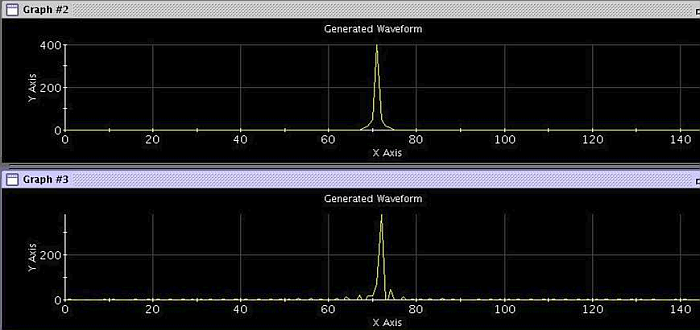
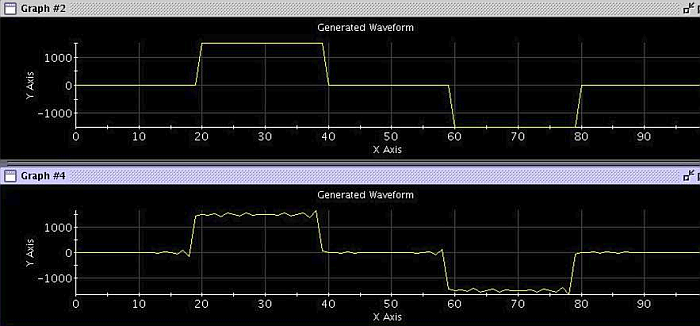
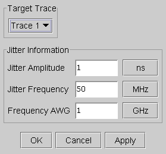

Inject Jitter...
The Jitter function allows you to generate jitter signals which are often required when testing, for example, LAN devices.
Once you have defined a waveform with the Signal Analyzer, the Jitter function lets you inject a jitter signal to this arbitrary waveform. The jitter signal frequency-modulates the defined waveform. This produces a modulation of the period of the signal.
The following figure shows the jitter effect on a sine waveform in the frequency domain.

In binary coded signals, the Jitter function causes a deviation in the position of the waveform edges as you can see in the figure below.

Select Jitter to define the jitter signal that modulates the existing waveform. The jitter signal is a sinusoidal wave that can be defined by a peak amplitude and a frequency. When you click this button, the Inject Jitter window is displayed as shown in the figure below. This window prompts you for the parameters required to define the jitter signal, which are:
Jitter Amplitude Specifies the peak level of the jitter signal. This corresponds to the maximum time deviation that the period of the waveform can suffer. The jitter amplitude is expressed in time units. You can change the unit range by clicking the button next to the Jitter Amplitude box.
Jitter Frequency Defines the frequency of the jitter signal. You can change the unit range by clicking the button next to the Jitter Frequency box. The jitter frequency must be within the 10 kHz to 50 MHz range.
Frequency AWG Specifies the sample frequency of the AWG in order to generate the jitter signal. This frequency value must be, at least, twice the jitter frequency value. An acceptable sample resolution is reached when the ratio Frequency AWG/Jitter Frequency is 8. That means the jitter signal is sampled with 8 points per cycle. The AWG sample frequency can be a maximum 1 GHz.
After entering all values, click OK to obtain the jittered signal in the Signal Analyzer.
